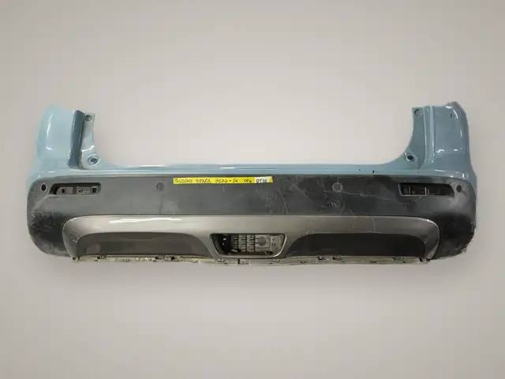
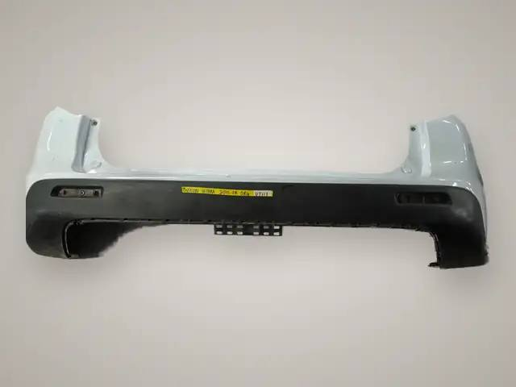
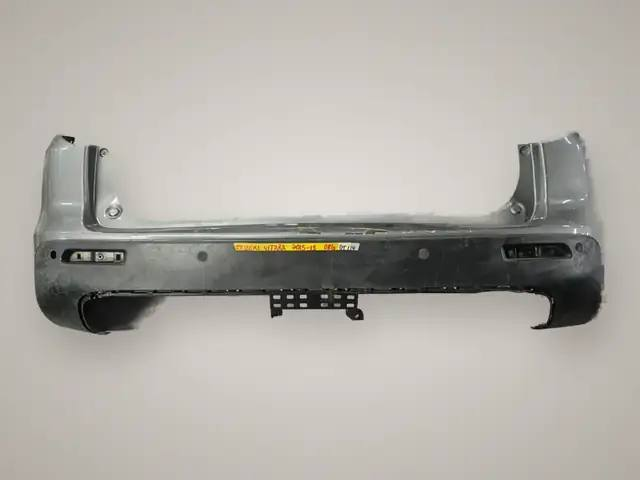
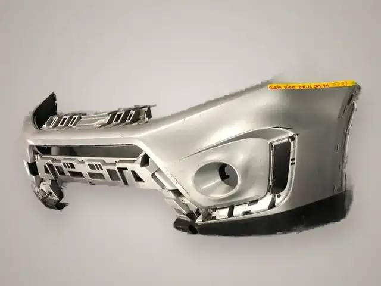
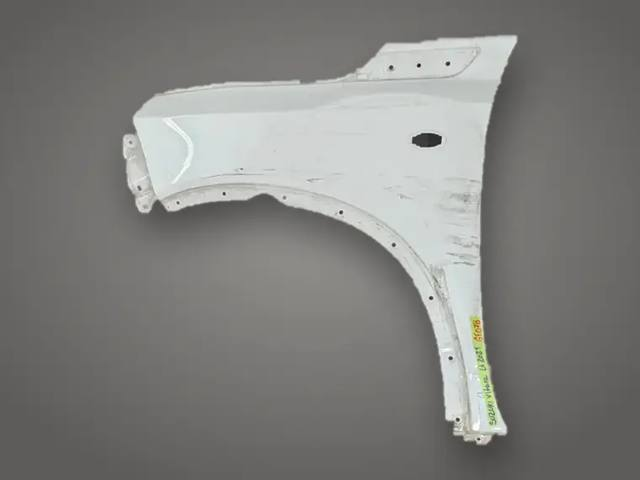
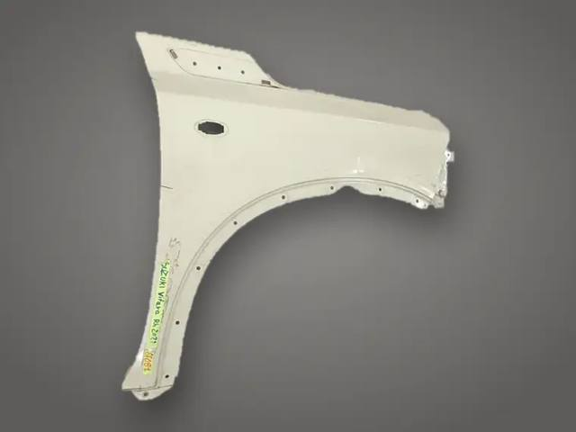
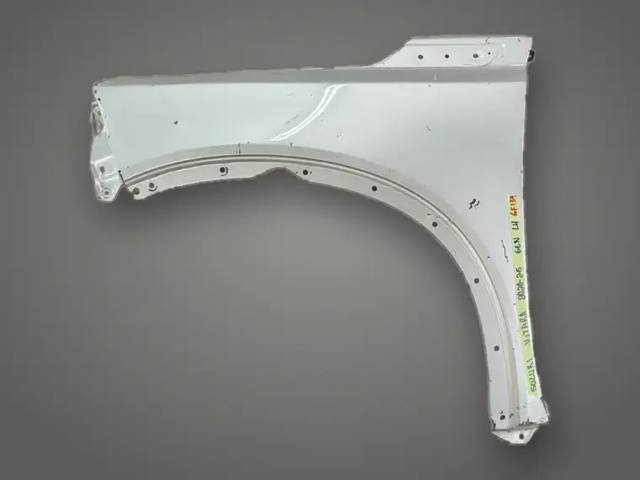
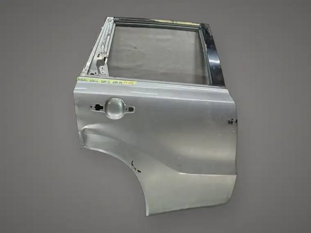

Piezas de carrocería para Suzuki Vitara
26 piezas disponibles hoy para Suzuki Vitara, cada una con su foto y su código: defensas traseras (5), defensas delanteras (4), guardafangos (4), faros y lámparas delanteras (3). Dinos el año de tu carro y te confirmamos si le sirve.
- Garantía de 3 días
- Foto real de cada pieza
- Efectivo, Yappy o ACH
- Lunes a sábado, 8:00 a. m. a 5:00 p. m.
Defensas traseras para Suzuki Vitara 5
 DT108Vitara2019-26 · original nuevo
DT108Vitara2019-26 · original nuevo
DT111Vitara2019-26 · original
DT113Vitara2015-18 · original
DT114Vitara2015-18 · original DT221Vitara2017-21 · original
DT221Vitara2017-21 · originalDefensas delanteras para Suzuki Vitara 4

884Vitara2016-22 · original 885Vitara2016-22 · original
885Vitara2016-22 · original 893Vitara2018-22 · original
893Vitara2018-22 · original DD002Vitara2016-22 · original
DD002Vitara2016-22 · originalGuardafangos para Suzuki Vitara 4

GF078Vitara2019-26 · lado izquierdo · original
GF081Vitara2019-26 · lado derecho · original GF083Vitara2019-26 · lado derecho · original
GF083Vitara2019-26 · lado derecho · original
GF134Vitara2019-26 · lado izquierdo · genéricoFaros y lámparas delanteras para Suzuki Vitara 3
 103Vitara2015-18 · lado izquierdo · genérico
103Vitara2015-18 · lado izquierdo · genérico 105Vitara2006-14 · lado derecho · original
105Vitara2006-14 · lado derecho · original 855Vitara2016-20 · lado derecho · genérico
855Vitara2016-20 · lado derecho · genéricoFlares para Suzuki Vitara 2
 FL099Vitara
FL099Vitara FL105Vitara
FL105VitaraPuertas para Suzuki Vitara 2
 PD021Vitara2015-26 · lado derecho · original
PD021Vitara2015-26 · lado derecho · original
PT043Vitara2015-26 · lado derecho · original RV021Vitara
RV021Vitara HA094Vitara
HA094Vitara TB029Vitara
TB029Vitara